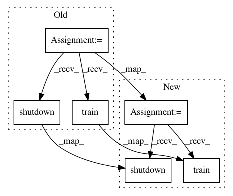

b5db074f69f553a99f827c5e9d8ba097302d8948,examples/mnist/keras/mnist_mlp_estimator.py,,,#,95
Before Change
images = sc.textFile(args.images).map(lambda ln: [float(x) for x in ln.split(",")])
labels = sc.textFile(args.labels).map(lambda ln: [float(x) for x in ln.split(",")])
dataRDD = images.zip(labels)
cluster = TFCluster.run(sc, main_fun, args, args.cluster_size, args.num_ps, args.tensorboard, TFCluster.InputMode.SPARK, log_dir=args.model_dir, master_node="master")
cluster.train(dataRDD, args.epochs)
cluster.shutdown()
After Change
labels = sc.textFile(args.labels).map(lambda ln: [float(x) for x in ln.split(",")])
dataRDD = images.zip(labels)
if args.mode == "train":
cluster = TFCluster.run(sc, main_fun, args, args.cluster_size, args.num_ps, args.tensorboard, TFCluster.InputMode.SPARK, log_dir=args.model_dir, master_node="master")
cluster.train(dataRDD, args.epochs)
cluster.shutdown()
else:
// Note: using "parallel" inferencing, not "cluster"
// each node loads the model and runs independently of others
cluster = TFCluster.run(sc, main_fun, args, args.cluster_size, 0, args.tensorboard, TFCluster.InputMode.SPARK, log_dir=args.model_dir)
In pattern: SUPERPATTERN
Frequency: 3
Non-data size: 6
Instances
Project Name: yahoo/TensorFlowOnSpark
Commit Name: b5db074f69f553a99f827c5e9d8ba097302d8948
Time: 2018-08-27
Author: leewyang@gmail.com
File Name: examples/mnist/keras/mnist_mlp_estimator.py
Class Name:
Method Name:
Project Name: yahoo/TensorFlowOnSpark
Commit Name: 5fc70a47e8b1076a7be71cbcc6e7b2f99f553719
Time: 2018-12-07
Author: leewyang@gmail.com
File Name: examples/mnist/keras/mnist_mlp_estimator.py
Class Name:
Method Name:
Project Name: ray-project/ray
Commit Name: 7cad64837042dc1da4cae4a4f8d47b1891fbc136
Time: 2020-12-04
Author: xianyang.liu@intel.com
File Name: python/ray/util/sgd/tests/test_torch_failure.py
Class Name:
Method Name: test_resize